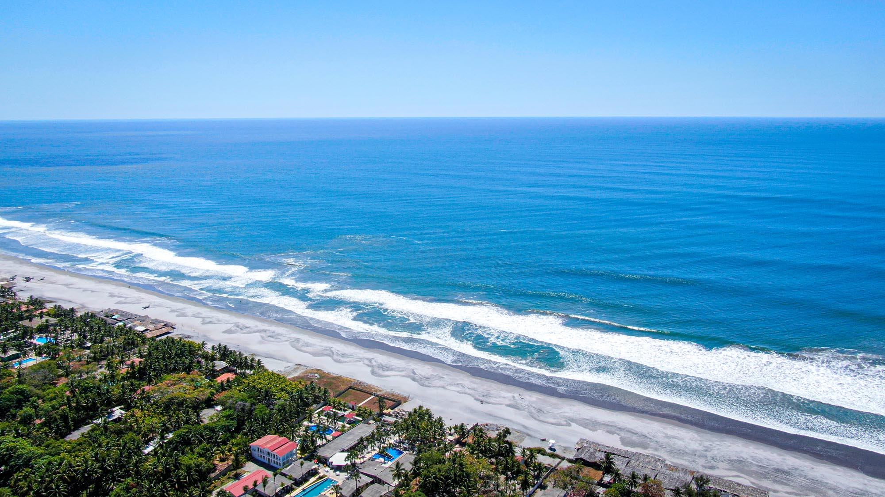
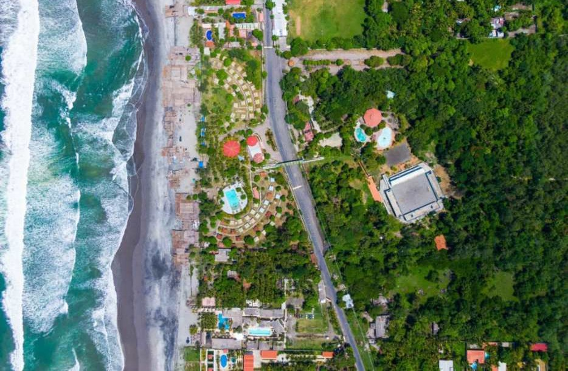
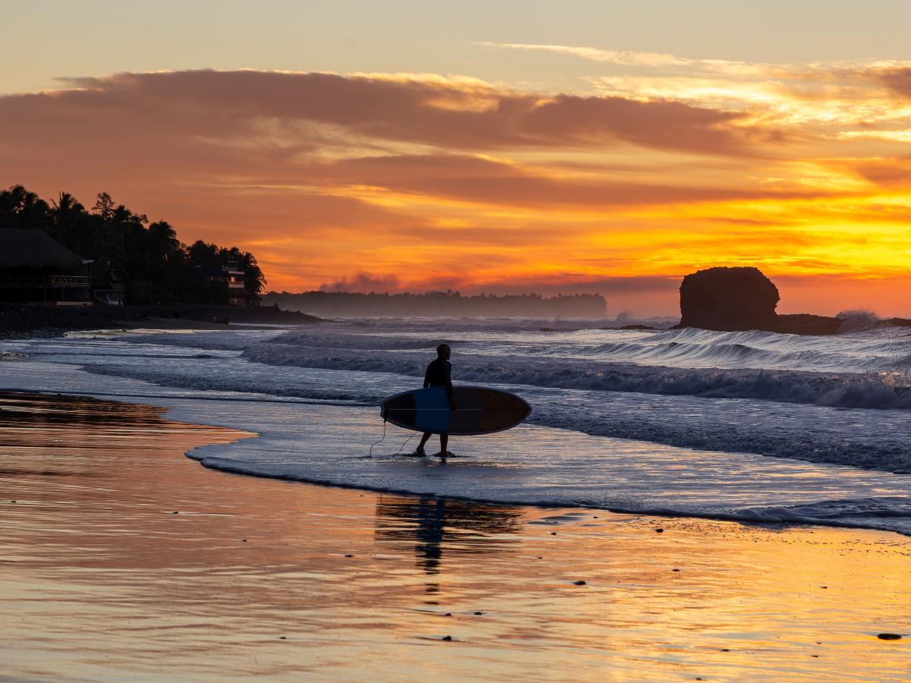
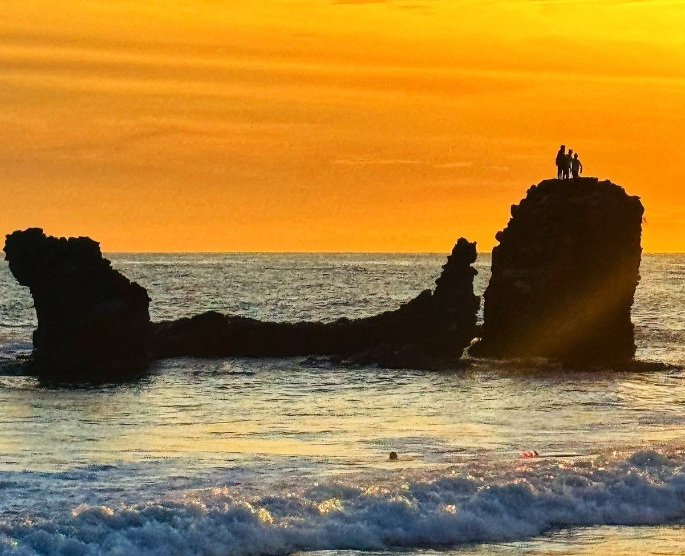
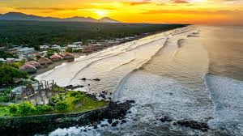
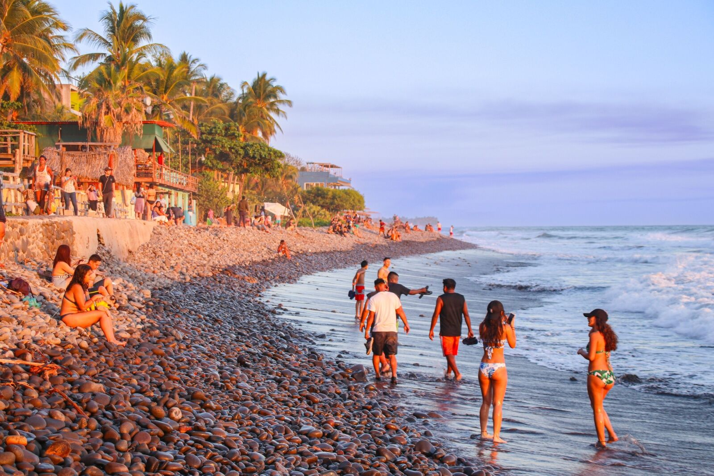

Costa del Sol
Costa del Sol en El Salvador es un destino turístico de clase mundial,
situado en el departamento de La Paz, a unos 65 km de San Salvador.


Playa El Tunco
Playa El Tunco, en La Libertad, El Salvador, es un destino emblemático de surf famoso
por su ambiente bohemio, vida nocturna y olas constantes


Playa El Cuco
Playa El Cuco, ubicada en San Miguel a 170 km de San Salvador, es un destino tranquilo conocido
por su extensa franja de arena volcánica oscura y aguas cálidas.

